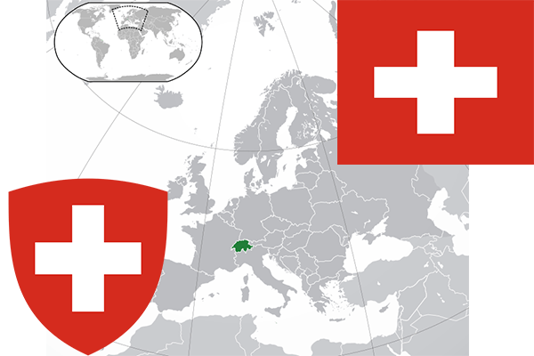

To`liq nomi: Shveysariya Konfederatsiyasi
Region: Markaziy Yevropa
Qonunchilik shakli: Federal parlamentli respublika
Mustaqillik kuni: 24-oktabr 1648-yil
Poytaxt: Bern
Maydoni: 41 285 km2
Chegaradosh davlatlari: Germaniya, Italiya, Fransiya, Avstriya, Lixtenshteyn.
Aholisi: 8 236 600 (2017-yil)
Aholi zichligi: 188 /км²
Aholining o`rtacha yoshi: 82,90 yil
Rasmiy tili: Nemis, Fransuz,Italyan tillari
Dini: Xristian
Pul birligi: Shveysariya Franki
Telefon prefiksi: +41
Internet domen: .ch; .swiss
Xalqaro tashkilotlarga a`zoligi: BMT, YeI
Dengiz va okeanlarga chiqishi: Yo’q
YIM: Butun: $636 mlrd (2017-yil) Jon boshiga: $81 000
Yirik shaharlari: Bern, Jeneva, Syurix